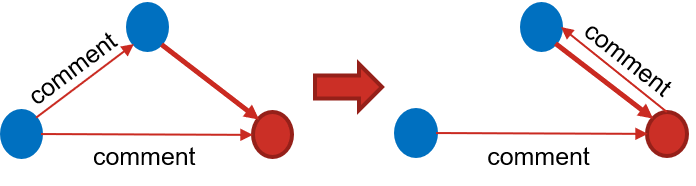

Python functions¶
This diagram gives a basic summary of how the Python modules interact. Both parsegexf.py and pagerank.py expose their methods as a web API for Running from Docker. Running from the command line is described in Running commonshare.
{kind=link}
parsegexf.py¶
This contains method for the initial parsing phase of commonfare.net platform data. These methods refer to parsegexf.py in the python/ directory, but the
version in python_generic/ performs similar operations.
-
parsegexf.addNewAttributes(root, namespaces)[source]¶ Adds all necessary node and edge attributes for use with commonfare.net
First, this method removes the node ‘id’ attribute (its ID is already in the GEXF) and replaces it with a ‘platform ID’ attribute (as node IDs on commonfare.net are different to the GEXF IDs). It also adds edge attributes for all interaction types on commonfare.net.
Parameters: - root – XML root element of the GEXF file
- namespaces – string XML namespace used in the GEXF file
Returns: 2-tuple - (dict of edge attribute names mapped to their IDs, ID of removed node attribute)
-
parsegexf.addNodeSpell(node, attrs)[source]¶ Add spell element to a node element. A ‘spell’ is in the form
<spell end="2019/02/20" start="2019/02/20" />and the spells of a node determine all points at which it has been active for time-based filtering.Parameters: - node – string node ID to add spell to
- attrs – dictionary of attributes of this spell
-
parsegexf.cleanEdges(root, namespaces, d)[source]¶ Methods for cleaning and parsing edges in the GEXF
This method does a few things: It deletes self-looping edges and ‘Basic Income’ transactions, as well as those that for whatever reason do not have a recognised type.
It parses the label of each edge to determine its type and date (using the
parseLabelmethod. It then merges all edges betwee two nodes into a single edge containing all interactions, their type and the date they occurred.Finally, it keeps track of the earliest and latest edge occurrence, to get an overall time window of platform interactions
Parameters: - root – XML root element of the GEXF file
- namespaces – string XML namespace used in the GEXF file
- d – dict of edge attribute names mapped to their IDs
Returns: 3-tuple - edges to delete, earliest interaction date, latest interaciton date
-
parsegexf.cleanNodes(root, namespaces, gexf_id)[source]¶ Adds necessary attributes to nodes in the GEXF
First, this method removes the GEXF ID attribute from each node.
It then extracts the node’s platform ID from its label and adds this as the ‘platform_id’ attribute created in
addNewAttributes.Finally, it removes apostrophes from node titles/names as this can cause parsing errors
Parameters: - root – XML root element of the GEXF file
- namespaces – string XML namespace used in the GEXF file
- gexf_id – string ID of old node ID attribute
-
parsegexf.parse(*gexffile)[source]¶ Entry method to begin parsing the GEXF file
This is the method called through the Flask API to begin parsing the GEXF file of all commonfare.net interactions. Once the GEXF is in the correct format, it is passed to methods in the makegraphs.py module to output JSON data for visualisation purposes
-
parsegexf.parseLabel(nodes, edges, edgeid, sourceid, targetid, label)[source]¶ Get edge type, start and end dates from label
- This method:
- Adds edge spells to source and target nodes
- Finds the type, start and end date of edge from its label
Labels have the following format:
conversation_13+date_start=2018/06/23+date_end=2018/06/26Parameters: - nodes – all nodes of the GEXF graph
- edges – all edges of the GEXF grpah
- edgeid – string ID of edge in GEXF
- sourced – string ID of node that is source of this edge
- targetid – string ID of node that is target of this edge
- label – string label of edge in GEXF
Returns: 3-tuple containing edge type, start and end date
-
parsegexf.replace_source(nodes, edges, edgeid, label, source, target)[source]¶ Replace comment sender/receiver edge with story/writer edge
When a commoner leaves a comment on a story, 2 edges exist: 1) A comment sender - story edge 2) A comment sender - comment receiver edge This replaces the sender-receiver with a story-receiver edge
This is done to increase the strength of connection between users and their created stories when these stories receive comments. It also distinguishes direct user-user interactions from indirect user-story-user interactions in the visualisation
Parameters: - nodes – all nodes of the GEXF graph
- edges – all edges of the GEXF grpah
- edgeid – ID of comment sender/receiver edge in GEXF
- label – label of comment sender/receiver edge in GEXF
- source – Source node of edge
- target – Target node of edge
Returns: string edge type (comment_story or comment_listing)
{kind=link}
makegraphs.py¶
-
makegraphs.build_commoner_data(G, commoner_graphs, nodes_to_remove)[source]¶ Extract commoners’ interaction histories.
This extracts the individual interactions of each commoner from the NetworkX graph, converts it to JSON and appends it to their personal interaction history, represented in the ‘commoner_graphs’ dictionary
Parameters: - G – NetworkX graph of all interactions in a time window
- commoner_graphs – dictionary mapping each commoner ID to
their personal interaction history in JSON format :param nodes_to_remove: list of nodes not present in this time window (so that 0 values can be added to their JSON)
-
makegraphs.filter_spells(G, window)[source]¶ Remove all attributes outside time window from nodes/edges
This removes all the spells and actions from the nodes and edges where they fall outside of the window slot. This makes JSON files much less bulky and easier to read
Parameters: - G – NetworkX graph
- window – 2-tuple containing start date and end date
-
makegraphs.init(filename)[source]¶ Read GEXF file and initiate graph creation.
This reads and parses the GEXF data file, then calls the ‘make_all_graphs’ method with three different window lengths
Parameters: filename – Path to the GEXF graph file
-
makegraphs.jaccard(front, stepcommunity)[source]¶ Compute Jaccard similarity coefficient of two node groups
This uses the Jaccard index statistic to determine whether one node group is similar enough to a previous node group to be part of the same dynamic community
Parameters: - front – list of NetworkX nodes at time t-1
- stepcommunity – list of NetworkX nodes at time t
Returns: Jaccard similarity coefficient
-
makegraphs.make_all_graphs(G, startdate, enddate, spacing)[source]¶ Generate all JSON files from NetworkX graph
This method generates a JSON file for the cumulative graph of interactions, JSON files for interactions within each time window (determined by ‘spacing’ parameter) and JSON files for each commoner that contains their interaction history. Files are created in the ‘data/output/’ directory for each ‘spacing’ as follows: ————— graphdata/spacing/0.json - JSON for all interaction data graphdata/spacing/1-X.json - JSON of interaction windows, with size dependent on the ‘spacing’ parameter userdata/1-X.json - JSON of each commoner’s interaction history (filename corresponds to their commoner ID)
Note that the output directory is within this directory (i.e., its path is python/data/output and not commonshare/data/output). This is so that the Docker container can access the output files properly.
Parameters: - G – NetworkX graph of all interactions across time
- startdate – date of first interaction
- enddate – date of most recent interaction
- spacing – string representing size of each time window
(either ‘weekly’, ‘biweekly’ or ‘monthly’
-
makegraphs.make_dynamic_communities(core_G, communities, index)[source]¶ Compute new dynamic communities at a given time step.
Algorithm to find communities that exist in the network across multiple time steps. At each time window, ‘static’ community detection is done with the Louvain algorithm from https://github.com/taynaud/python-louvain Then, the communities at this step are compared to those from the previous step. If they are similar enough, they become part of the same ‘dynamic community’. For more detail, see this paper:
D. Greene, D. Doyle and P. Cunningham, “Tracking the Evolution of Communities in Dynamic Social Networks,” 2010 International Conference on Advances in Social Networks Analysis and Mining, Odense, 2010, pp. 176-183.
Parameters: - core_G – NetworkX graph of all interactions in time window
- communities – list of NetworkX node ‘dynamic communities’
- index – integer representing time step
Returns: dictionary mapping each node to its Louvain community
-
makegraphs.make_graphs(G, window, index, communities, commoner_graphs)[source]¶ Generate JSON for NetworkX graph. Update commoner graphs.
This method generates all necessary information from a NetworkX graph representation and returns it in a JSON format. It also updates the ‘dynamic communities’ and individual commoner graphs (using make_dynamic_communities and build_commoner_data methods)
Parameters: - G – NetworkX graph of interactions in time window
- window – 2-tuple containing start and end dates
- index – integer representing time step
- communities – list holding NetworkX dynamic communities
(filled in by make_dynamic_communities method) :param commoner_graphs: dictionary mapping each commoner node to its interaction history (filled in by build_commoner_data method) :returns: tuple containing:
- Updated dynamic communities
- Updated commoner_graphs
- JSON representation of NetworkX graph
-
makegraphs.make_recommender_data(G, window, tag_edges)[source]¶ Make the GEXF used for recommending stories
This takes the GEXF file containing every interaction over time and generates the ‘recommenderdata.gexf’ file, which is used by ‘pagerank.py’ to determine stories that should be recommended to users
It also makes the ‘neglected_nodes’ list, consisting of nodes with a degree < 2 and age < 50 days
Parameters: - G – NetworkX graph of all interactions across time
- window – A 2-tuple containing the start and end dates of the graph actions
- tag_edges – List of NetworkX edges to tag nodes
kcore.py¶
-
kcore.colluding(G, n1, n2, n1_weight, n2_weight, window)[source]¶ Check if two nodes are colluding
Basic collusion checking algorithm. Determines if actions from one node are greater than a threshold of the recipient node’s overall weight. The threshold is defined in config.py
Algorithm adapted from the following paper: H.Shen, Y.Lin, K.Sapra and Z.Li, “Enhancing Collusion Resilience in Reputation Systems,” in IEEE Transactions on Parallel and Distributed Systems, vol.27, no.8, pp.2274-2287, 1 Aug. 2016.
Parameters: - G – NetworkX graph of all interactions in a time window
- n1 – string representing Node 1 ID
- n2 – string representing Node 2 ID
- n1_weight – float, sum of edge weights of Node 1
- n2_weight – float, sum of edge weights of Node 2
- window – 2-tuple of start and end dates of time window
Returns: bool, True if strong suspicion of collusion.
-
kcore.nodeweight(G, node_id, window, suspect_nodes)[source]¶ Calculate weight of a node in the interactions graph.
This calculates a node’s ‘weight’ by looking at the number, type, and date of interactions with other nodes in the graph.
Parameters: - G – NetworkX graph of all interactions in a time window
- node_id – string ID of node to determine weight of
- window – 2-tuple with start and end dates of time window
- suspect_nodes – dictionary mapping node ID’s of high
activity to their overall weight
-
kcore.weighted_core(G, window)[source]¶ Compute weighted k-core for each node in a graph
This extends the standard NetworkX k-core calculation method by weighting each node based on its platform interactions, performing a log-transformation and normalising the final value to an integer between 1 and 10 It only returns a list of colluding nodes as the NetworkX graph is passed by reference and updated anyway
Parameters: - G – NetworkX graph of all interactions in a time window
- window – 2-tuple of start and end dates of time window
Returns: a list of potential colluding nodes
pagerank.py¶
-
pagerank.personalisedPageRank(core_graph, story, user)[source]¶ Compute personalised PageRank of stories for given user
This uses NetworkX’s built in Personalised PageRank algorithm to compute PageRank value of other stories on the platform for a given user reading a given story
More info on the algorithm and its personalisation in:
Page, L., Brin, S., Motwani, R., & Winograd, T. (1999). The PageRank citation ranking: Bringing order to the web. Stanford InfoLab.
Parameters: - core_graph – NetworkX graph of platform interactions with additional data on neglected nodes and edge weights
- story – string ID of story a user is reading
- user – string ID of platform user (or 0 if not logged in)
Returns: dictionary of story IDs mapped to their PageRank value
-
pagerank.run(storyid, userid)[source]¶ Return three recommended stories for user reading a story
This uses the personalised pagerank algorithm to return the IDs of three stories that a user should be recommended on reading a particular story. The method is routed using the Flask API to the ‘/recommend’ URL, which also contains the parameters
Parameters: - storyid – string ID of story user is reading
- userid – string ID of user
simulation.py¶
-
simulation.create_object(user, objtype)[source]¶ Create object and edge between it and its creating user
Parameters: - user – string ID of user who created object
- objtype – string type of object
-
simulation.do_random_thing()[source]¶ Select a random interaction to perform this turn
This uses a random number generator to determine an action to perform in the simulation. Interactions can be made more likely simply by having more result numbers correspond to them
-
simulation.get_users(need_two_users)[source]¶ Return two random user nodes from graph
Parameters: need_two_users – bool, True if 2 users are needed Returns: list containing one or two user IDs
-
simulation.object_interact(objtype, interaction)[source]¶ Create edge between user node and story/listing node
Parameters: - objtype – string type of object
- interaction – string type of interaction
-
simulation.str_to_class(classname)[source]¶ Convert a string to a class
Parameters: classname – string name of class to access Returns: class corresponding to name
-
simulation.tag_assign(thing, tag)[source]¶ Create edge between a tag node and a user/story/listing node
Parameters: - thing – string ID of a user, story or listing node
- tag – string ID of a tag node